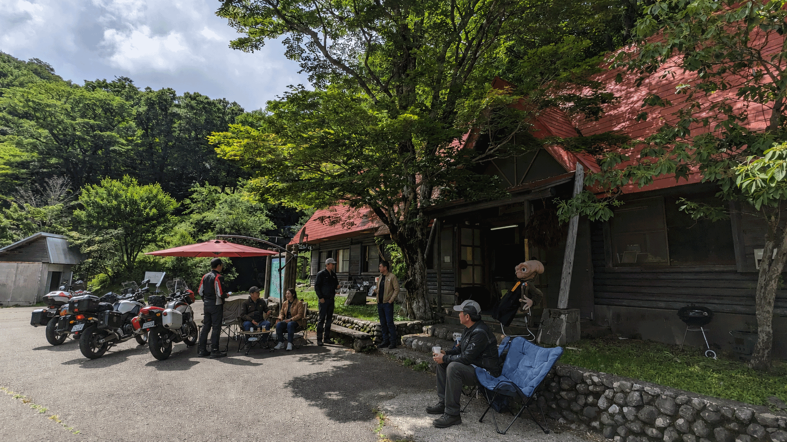
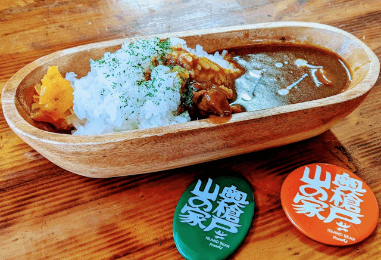
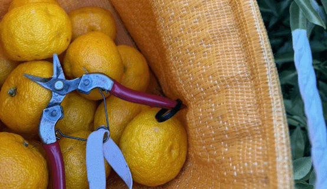

2025 Apr-Nov
6,174
奥槍戸山の家 来場者
2025年度営業期間中に確認できた来場者数です。食事、休憩、登山前後の立ち寄り、林道利用など、山の拠点に人が集まる流れが見えています。
出典: 阿波山雅の活動記録
このページは活動紹介ではなく、実際に動いた日付、数値、掲載、写真をまとめる報告ページです。山に人が戻り、食が届き、記録が残り、外部との接点が生まれていることを、できるだけ具体的に示します。
「みんなが集まる場所を守りたい」という思いを、来訪者に確実に伝えるには、気持ちの言葉だけでは足りません。いつ、どこで、何をして、どんな数字が出て、誰に届いたのか。活動報告では、その証拠を積み上げます。
大きく見せるためではなく、続けるために記録します。来場者数、フードリボンの食数、広報誌の発行、メディア掲載、助成採択、行政との協議。ひとつずつが、山の拠点に人が戻り始めているサインです。
数字はまだ途中経過です。それでも、活動が感覚ではなく実績として積み上がっていることを示しています。
2025年度営業期間中に確認できた来場者数です。食事、休憩、登山前後の立ち寄り、林道利用など、山の拠点に人が集まる流れが見えています。
実測データをもとにした年間推計です。すでに山を通る人の流れがあり、その人たちを地域の滞在、食、体験につなげる余地があります。
開始1か月時点で、提供117食、支援148食を報告。一食を託す人と、一食を受け取る人が地域の中でつながり始めています。
vol.001からvol.004まで発行。活動、地域の話題、組合員の紹介を、後から読み返せる記録として残しています。
四国放送、徳島新聞、日亜ふるさと振興財団、徳島ガンバロウズ、とくしま林道ナビなど、外部との接点が増えています。
2024年1月の設立から、営業、食の支援、広報、イベント、行政協議まで、山を次へつなぐ活動を少しずつ広げています。
写真は、数字だけでは伝わらない空気を補います。今後、実際の活動写真が増えたらこの面をさらに強化できます。





活動の説明は `projects.html` に集約し、このページでは「いつ、何が起きたか」を中心に整理します。
2025年10月18日に第一弾、2025年11月16日に第二弾の活動を告知・実施中として記録しています。山道は、歩く人がいるだけでは保てません。現状確認、整備、次回活動の準備を重ねることで、次の世代も歩ける道を残します。
2024年3月21日に平の里、奥槍戸山の家で活動開始。2024年4月21日の開始1か月報告では、提供117食、支援148食を記録しました。2025年4月30日には徳島新聞の記事にも掲載されています。
2024年11月10日、剣山スーパー林道で開催された「カップラーメンミーティング」に参加。2025年11月16日には、とくしま林道ナビ主催の「剣山スーパー林道ミーティング」に参加予定として記録しています。林道を通る人を、地域に立ち寄る人へ変えるための接点づくりです。
2024年3月2日、2025年3月23日に木頭クマ祭りへの出店・登壇を記録しています。WoodHeadと連携しながら、木頭杉、木工、体験型企画を通じて、地域資源を「見る」だけでなく「触れる」「巡る」体験へ変えています。
2026年3月から、平の里を基点とした那賀町活性化について協議を開始。新規客層の開拓と、すでに林道を訪れているユーザーの取り込みをテーマに、通過する人を地域で滞在する人へ変える構想を進めています。
外部との接点は、活動が地域内外へ届き始めている証拠です。
日付のある実績を、時系列で追えるようにしました。
数字、写真、日付、掲載、協議。ひとつずつ積み上げながら、阿波山雅は「みんなが集まる場所」を守る活動を続けます。